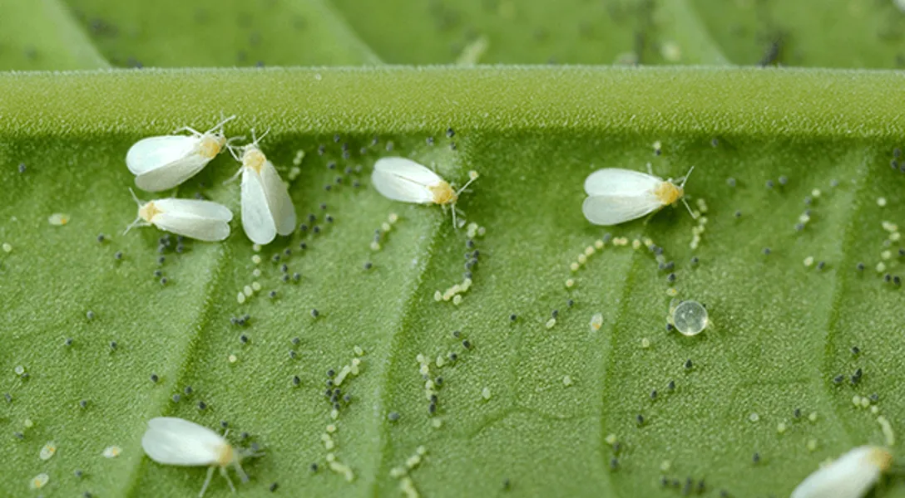
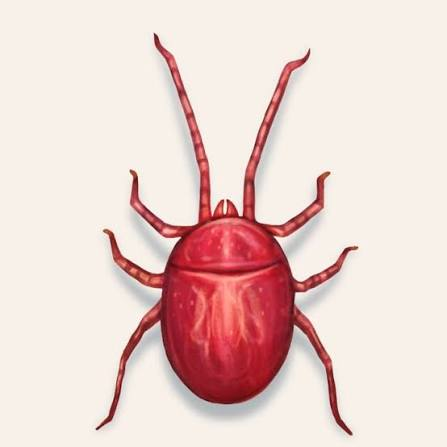
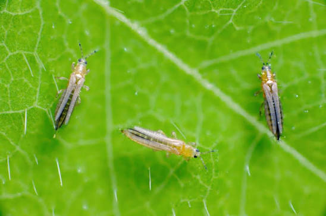
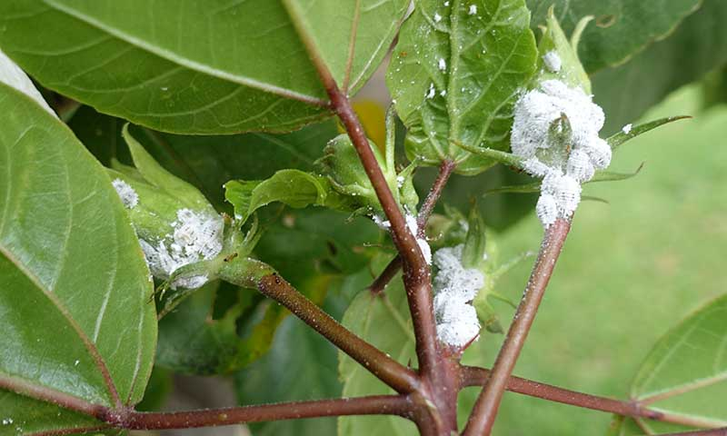
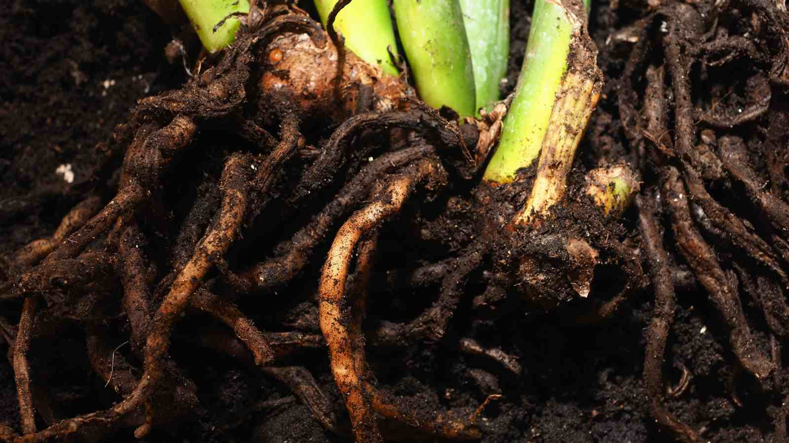

PEST MANAGEMENT

🪰 வெள்ளை ஈ மேலாண்மை
வெள்ளை ஈ தாக்குதலை ஆரம்ப நிலையிலேயே கண்டறிந்து இயற்கை முறையில் கட்டுப்படுத்த நாங்கள் ஆலோசனை வழங்குகிறோம். இலைகளின் அடிப்பகுதியில் ஏற்படும் பூச்சி தாக்குதலை ஆய்வு செய்து சரியான தீர்வை பரிந்துரைக்கிறோம். பயிரின் வளர்ச்சியை பாதிக்காமல் பாதுகாப்பான உயிரியல் தயாரிப்புகளை பயன்படுத்த வழிகாட்டுகிறோம். Cotton Whitefly Fighter, Beauveria போன்ற இயற்கை தயாரிப்புகளை தேவைக்கேற்ப பரிந்துரைக்கிறோம். இலை மஞ்சளாகுதல் மற்றும் வளர்ச்சி குறைபாடுகளை தடுக்கும் முறைகளை விளக்குகிறோம். தெளிப்பு செய்ய வேண்டிய சரியான நேரம் மற்றும் அளவை கூறுகிறோம். மீண்டும் தாக்குதல் வராமல் தடுக்கும் முன்னெச்சரிக்கை நடவடிக்கைகளையும் விளக்குகிறோம். அனைத்து வகையான பயிர்களுக்கும் பாதுகாப்பான வெள்ளை ஈ மேலாண்மை தீர்வை வழங்குகிறோம்.

🕷️ மைட் மேலாண்மை
மைட் தாக்குதலால் இலைகளில் ஏற்படும் சுருக்கம், நிறமாற்றம் மற்றும் வளர்ச்சி பாதிப்புகளை நாங்கள் ஆய்வு செய்கிறோம். பயிரின் நிலைக்கு ஏற்ப இயற்கை மைட் கட்டுப்பாட்டு முறைகளை பரிந்துரைக்கிறோம். Mite Off போன்ற இயற்கை தயாரிப்புகளை சரியான முறையில் பயன்படுத்த வழிகாட்டுகிறோம். மைட் பெருக்கத்தை குறைக்கும் தெளிப்பு அட்டவணையை வழங்குகிறோம். பயிர்களின் இலை ஆரோக்கியத்தை பாதுகாக்க தேவையான ஊட்டச்சத்துகளையும் பரிந்துரைக்கிறோம். மீண்டும் மைட் தாக்குதல் ஏற்படாமல் தடுக்கும் வழிமுறைகளை விளக்குகிறோம். சுற்றுச்சூழலுக்கு பாதுகாப்பான இயற்கை மேலாண்மையை பயன்படுத்த உதவுகிறோம். ஆரோக்கியமான பயிர் வளர்ச்சிக்கான முழுமையான மைட் மேலாண்மையை வழங்குகிறோம்.

🐛 திரிப்ஸ் மேலாண்மை
திரிப்ஸ் தாக்குதலால் இலைகள் மற்றும் பூக்களில் ஏற்படும் சேதங்களை நாங்கள் நேரடியாக ஆய்வு செய்கிறோம். தாக்குதலின் அளவிற்கு ஏற்ப இயற்கை தீர்வுகளை பரிந்துரைக்கிறோம். உயிரியல் பூச்சி மேலாண்மை தயாரிப்புகளை சரியான அளவில் பயன்படுத்த வழிகாட்டுகிறோம். பூ மற்றும் காய் உதிர்வை குறைக்கும் மேலாண்மை முறைகளை விளக்குகிறோம். பயிரின் வளர்ச்சியை பாதுகாக்க தேவையான ஊட்டச்சத்து ஆதரவையும் வழங்குகிறோம். தெளிப்பு நேரம் மற்றும் பயன்பாட்டு முறையை விவசாயிகளுக்கு விளக்குகிறோம். மீண்டும் திரிப்ஸ் தாக்குதல் வராமல் தடுக்கும் முன்னெச்சரிக்கை வழிமுறைகளையும் கூறுகிறோம். அனைத்து வகையான பயிர்களுக்கும் பாதுகாப்பான திரிப்ஸ் மேலாண்மையை வழங்குகிறோம்.

🍄 பூஞ்சை நோய் மேலாண்மை
பூஞ்சை நோய்களால் ஏற்படும் இலைப்புள்ளி, வாடல், அழுகல் மற்றும் பிற பாதிப்புகளை நாங்கள் கண்டறிகிறோம். நோயின் தன்மைக்கு ஏற்ப இயற்கை உயிரியல் தயாரிப்புகளை பரிந்துரைக்கிறோம். Uyir Pseudomonas மற்றும் Beauveria போன்ற தயாரிப்புகளை பயன்படுத்த வழிகாட்டுகிறோம். நோய் பரவலை குறைக்கும் மண் மற்றும் தெளிப்பு மேலாண்மை முறைகளை விளக்குகிறோம். பயிர்களின் நோய் எதிர்ப்பு திறனை அதிகரிக்கும் ஊட்டச்சத்துகளையும் பரிந்துரைக்கிறோம். நோய் பரவாமல் தடுக்கும் முன்னெச்சரிக்கை நடவடிக்கைகளை கூறுகிறோம். அனைத்து வகையான பயிர்களுக்கும் பாதுகாப்பான பூஞ்சை நோய் மேலாண்மையை வழங்குகிறோம். ஆரோக்கியமான வளர்ச்சி மற்றும் தரமான விளைச்சலுக்கு உதவுகிறோம்.

🌱 வேர் நோய் மேலாண்மை
வேர் அழுகல், வாடல் நோய் மற்றும் வேர் தொடர்பான பிரச்சினைகளை நாங்கள் ஆய்வு செய்கிறோம். மண்ணின் ஈரப்பதம் மற்றும் சத்து நிலையை மதிப்பீடு செய்து சரியான தீர்வுகளை வழங்குகிறோம். Uyir Pseudomonas, Dr.Root, Roots Rocket போன்ற உயிரியல் தயாரிப்புகளை பரிந்துரைக்கிறோம். வேர் வளர்ச்சியை மேம்படுத்தும் இயற்கை முறைகளை விளக்குகிறோம். மண்ணில் உள்ள தீங்கு விளைவிக்கும் நோய் கிருமிகளை கட்டுப்படுத்த உதவுகிறோம். மண்ணின் உயிர்ச்சக்தியை அதிகரிக்கும் உர பயன்பாட்டு திட்டத்தை வழங்குகிறோம். மீண்டும் வேர் நோய் ஏற்படாமல் தடுக்கும் வழிமுறைகளையும் கூறுகிறோம். அனைத்து பயிர்களுக்கும் முழுமையான வேர் நோய் மேலாண்மையை வழங்குகிறோம்.

🌿 இயற்கை பூச்சி மேலாண்மை
ரசாயன பூச்சிக்கொல்லிகள் இல்லாமல் இயற்கை முறையில் பூச்சிகளை கட்டுப்படுத்த நாங்கள் வழிகாட்டுகிறோம். பயிர்களை தாக்கும் பூச்சிகளின் வகையை கண்டறிந்து உயிரியல் தீர்வுகளை பரிந்துரைக்கிறோம். Beauveria, Cotton Whitefly Fighter, Mite Off போன்ற இயற்கை தயாரிப்புகளை பயன்படுத்தும் முறையை விளக்குகிறோம். பயனுள்ள நுண்ணுயிர்கள் மற்றும் உயிரியல் தயாரிப்புகள் மூலம் பூச்சி தாக்குதலை குறைக்க உதவுகிறோம். பயிர்களின் இயற்கையான நோய் எதிர்ப்பு திறனை அதிகரிக்கும் மேலாண்மை முறைகளை வழங்குகிறோம். சுற்றுச்சூழலுக்கும் மண்ணுக்கும் பாதுகாப்பான பூச்சி மேலாண்மையை பின்பற்ற உதவுகிறோம். அனைத்து வகையான பயிர்களுக்கும் பாதுகாப்பான இயற்கை பூச்சி மேலாண்மை திட்டத்தை வழங்குகிறோம். அதிக மகசூல் மற்றும் ஆரோக்கியமான பயிர் வளர்ச்சிக்கு தொடர்ந்து ஆதரவளிக்கிறோம்.